Quantitative thinking for global environmental governance
POLS 081 · Global Environmental Governance
November 18, 2026
1:15–2:30 · Part 1: How numbers become evidence
2:30–2:45 · Break
2:45–4:00 · Part 2: Hands-on lab
The goal: leave with a question your data paper can actually answer, and the tools to answer it.
From the pre-workshop survey (9 responses):
Today is built around those obstacles. By the break you should have a draft question. By the end, a first look at data.
Evidence · Questions · Correlation · Causation · Uncertainty
The course readings use very different kinds of evidence:
| Approach | Example from the course | Learns from… |
|---|---|---|
| Interviews and observation | Rietig (2014); Ciplet (2019) | How participants experience and explain a process |
| Process tracing / history | Haas (1992); Benedick (1998) | The sequence of events in one or a few cases |
| Discourse and document analysis | Lefstad & Paavola (2024) | How actors frame problems |
| Counting and measuring | Kaya & Schofield (2020); Tennant et al. (2024) | Patterns across many cases |
Quantitative work is one way of knowing, not the only one. It is strongest at describing how much, how often, and how things vary across many cases. It is weakest at explaining the mechanisms inside any one case.
Concept
“participation in climate negotiations”
→
Indicator
national delegation size
→
Data
UNFCCC lists of participants, COP1–21
→
Number
“Country X sent 212 delegates”
A good question is…
Descriptive and explanatory questions are both legitimate:
The five question types in your data-paper prompt
| Type | Asks… |
|---|---|
| Change | How has X changed over time? |
| Distribution | Who gets/has X? |
| Comparison | How do groups differ? |
| Composition | What is X made of? |
| Relationship | Do X and Y move together? |
The first four are descriptive. The fifth is about association, which is not yet causation.
Raise one hand for A, two hands for B.
1A. Is climate finance fair?
2A. Why do countries pollute?
3A. How did the number of non-state organizations hosting COP side events change after the Paris Agreement?
1B. Did adaptation finance per capita to small island states grow faster than to other developing countries, 2015–2022?
2B. Do countries more dependent on fossil-fuel exports submit less ambitious NDCs?
3B. Are NGOs important in climate governance?
The better question in each pair (1B, 2B, 3A) names a measurable quantity, a set of cases, and a comparison or time frame.
A correlation (r) summarizes how closely two variables move together across cases: from −1 (perfectly opposite) through 0 (no straight-line relationship) to +1 (perfectly together). It says nothing about why.
Guess the correlation. Call out your guess for each panel.
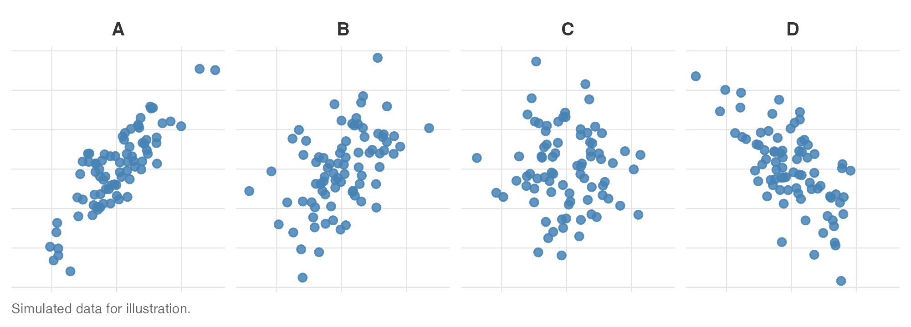
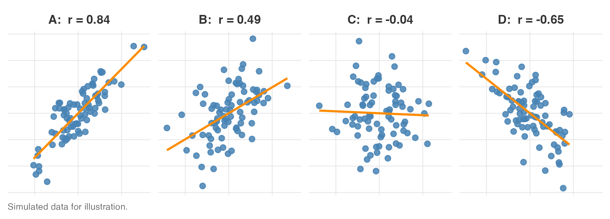
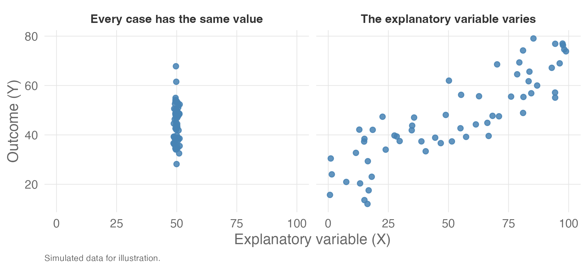
To explain a difference, you need a difference. If every country in your data is an AOSIS member, your data cannot tell you what AOSIS membership does.
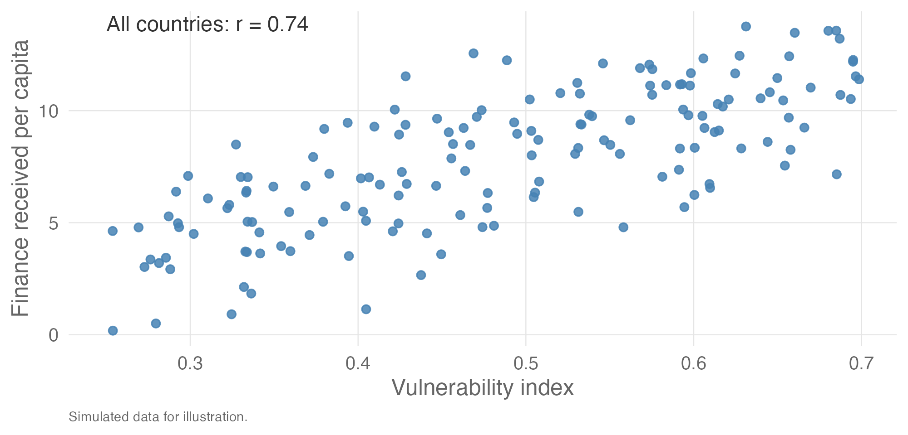
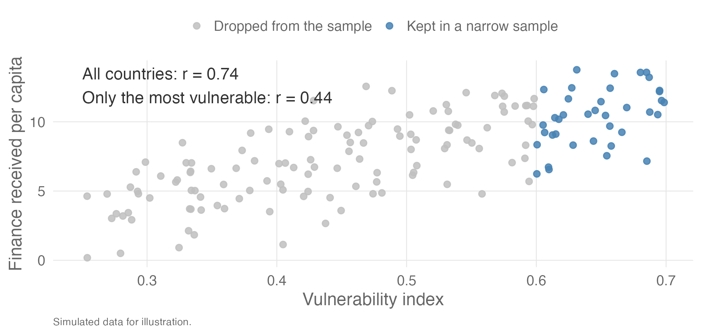
Cutting the range of X weakens the visible relationship, even though the underlying pattern is the same.
Ask of any dataset: who got left out?
1. Confounding
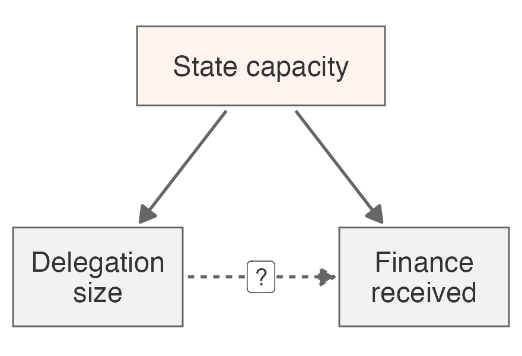
A third factor drives both.
2. Reverse causality
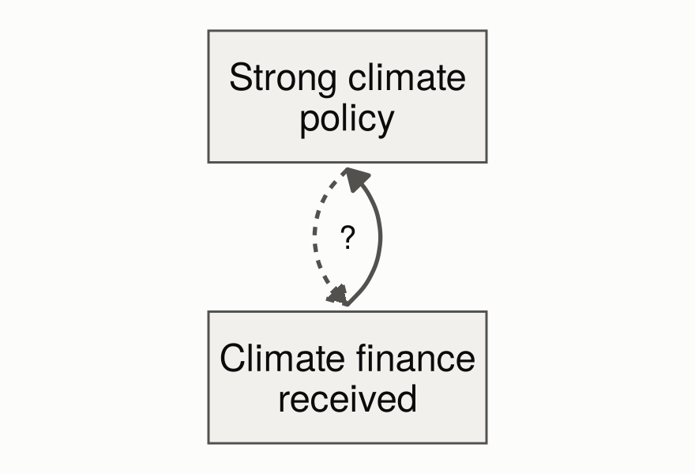
The outcome may cause the “cause.”
3. Selection
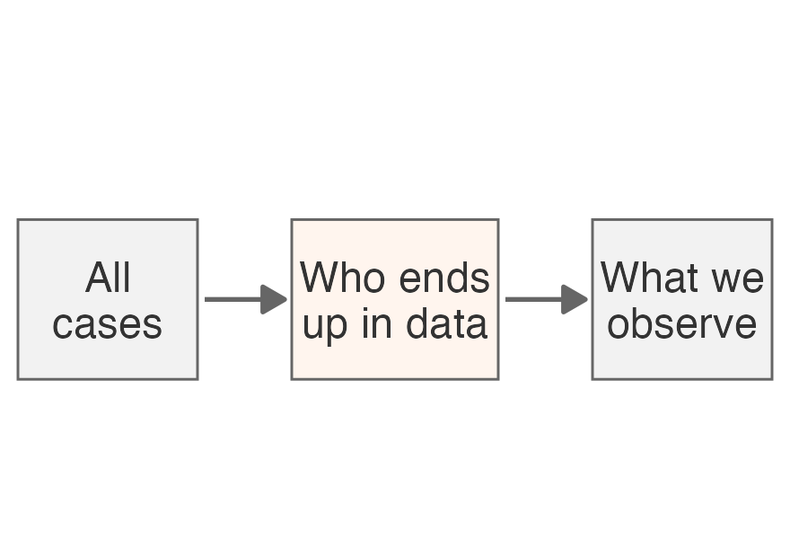
Cases in the data are not a fair picture of all cases (e.g., only firms that choose to disclose emissions).
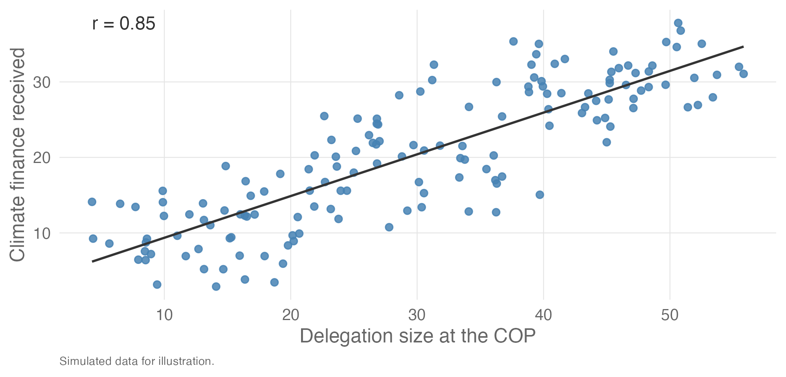
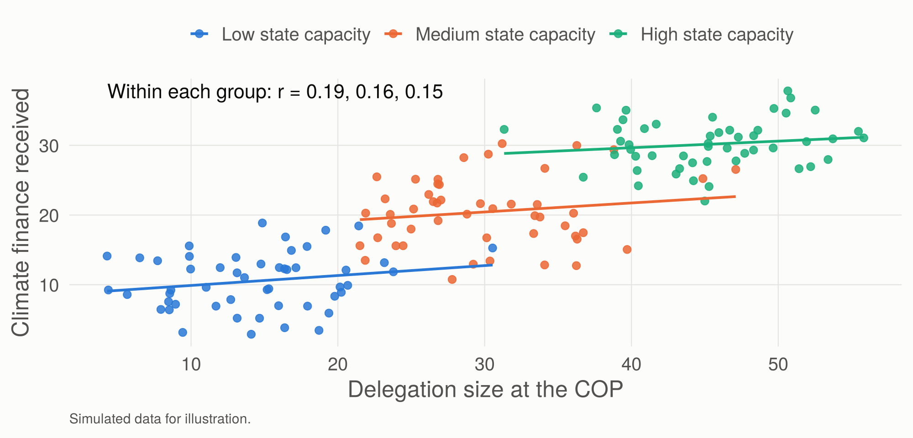
“Controlling for” state capacity means comparing like with like. It only works for confounders you thought of and measured, and it cannot fix reverse causality.
The core problem: we never see the same country both with and without the “treatment.”
Credible designs find a fair comparison instead:
| Design | The idea | Environmental-politics example |
|---|---|---|
| Randomized experiment | Chance decides who is treated | Payments to forest owners, randomized across Ugandan villages, reduced deforestation (Jayachandran et al. 2017) |
| Natural experiment | Nature or history assigns “treatment” as if by chance | Rainfall shocks used to study economic growth and civil conflict (Miguel, Satyanath & Sergenti 2004) |
| Difference-in-differences | Compare the change in treated vs. untreated units | French manufacturing firms covered by the EU ETS vs. similar uncovered firms, before and after carbon pricing: regulated firms cut CO2 by 14–16% (Colmer et al. 2025) |
| Regression discontinuity | Compare cases just above vs. just below a cutoff | Design idea: countries just above vs. just below an income threshold for concessional finance |
Credibility comes from the design, meaning how the comparison was set up, more than from adding control variables.
A careful description or correlation is a full, legitimate contribution. Just say what you found, not more.
| Instead of… | Write… |
|---|---|
| “Vulnerability causes countries to receive more finance.” | “More vulnerable countries received more finance on average.” |
| “Delegation size drives influence.” | “Larger delegations are associated with…” |
| “This proves…” | “This is consistent with… but could also reflect…” |
Name one alternative explanation you can’t rule out. That is what your prompt means by “what you can and cannot conclude.”
Let’s watch that happen with a simulated “world” of 150 countries →
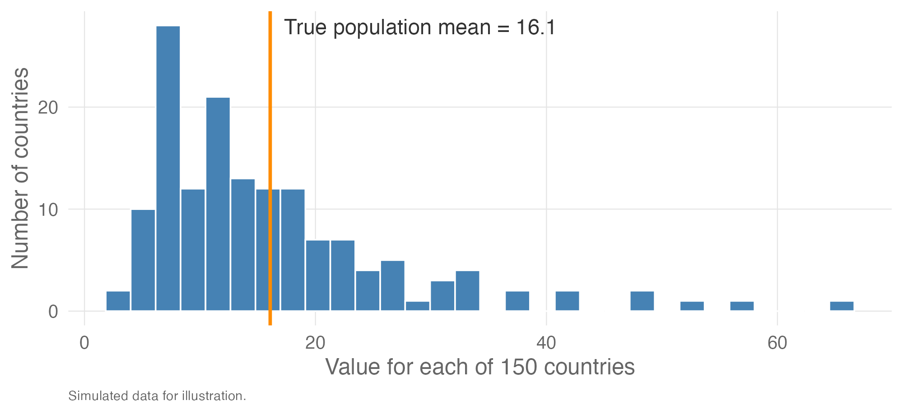
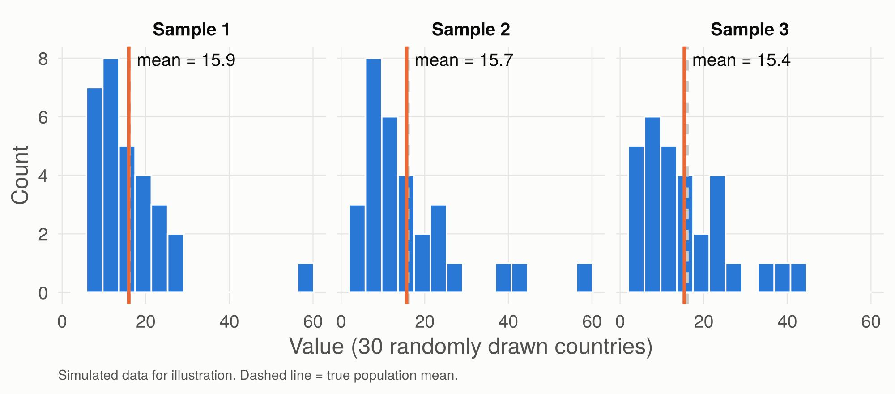
Three random samples of 30 countries give three different means. None of them is “wrong.”
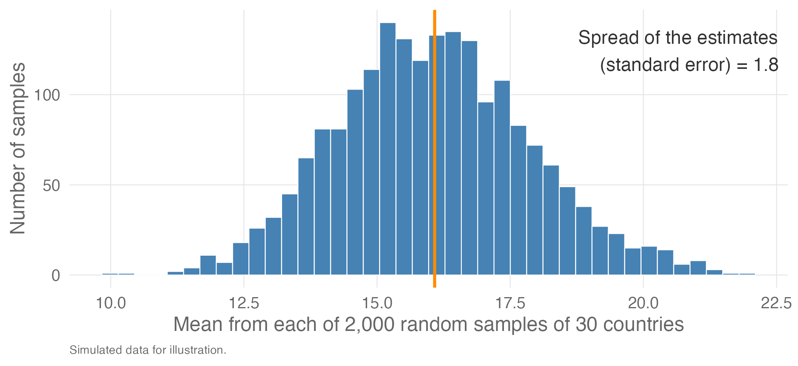
The standard error measures how much an estimate would bounce around from sample to sample. Bigger samples → smaller standard errors.
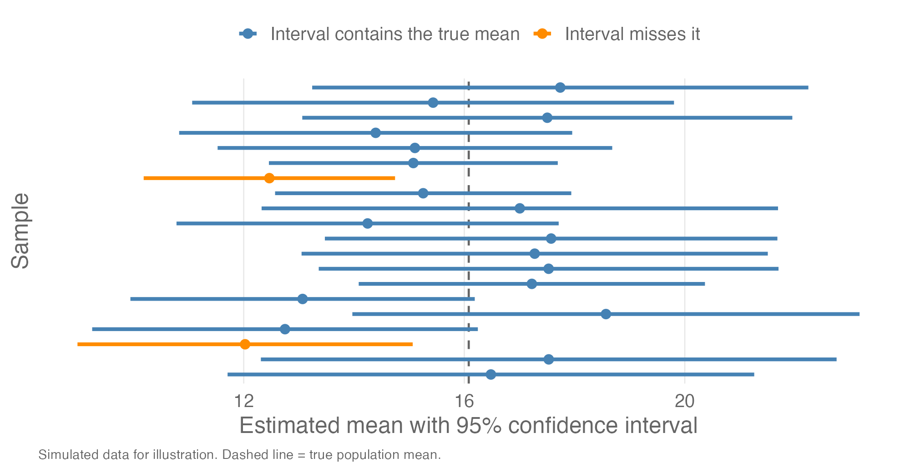
95% confidence interval: a procedure that captures the true value in about 95% of samples. (Here, 18 of 20 do.)
p-value: if there were really no relationship, how often would chance alone produce one at least this strong?
A p-value is not…
Many datasets in this course cover (almost) every country: OECD climate finance, UNFCCC participant lists, every COP side event.
Then what does a p-value mean?
Three readings, three steps in quantitative work
Measure
What is it, and how do we count it?
Fransen et al. (2023)
The implementation gap in climate policy
Map
How is it distributed? What patterns appear?
Xie et al. (2025)
Inclusivity at COP side events
Model
What explains it, and how sure are we?
Tennant et al. (2024)
Access to climate finance for SIDS
Small groups of 3–4. Everyone has read all three papers. For each paper, every group discusses the same prompts for about 4 minutes, then we hear from a few groups (2–3 minutes).
The concept: the climate policy implementation gap. The authors split it into two parts:
Who makes these numbers?
Why it’s a model paper for you
Warm-up, 3 minutes. As a group, pick one concept. Write down: (1) an indicator, (2) a data source, (3) one thing your indicator misses.
Then discuss Fransen et al. (4 min), and we’ll hear from a few groups:
The data: UNFCCC records of every COP side event, COP9–COP28 (2003–2023): titles, descriptions, host organizations, and who nominated participants
The methods:
The pattern: fossil-fuel lobbyists gain access through business NGOs and some governments, and sit at the edge of the anti-fossil-fuel discussion, which grew from a tight network of environmental NGOs.
This is “found data”: administrative records kept for running a conference, repurposed to measure inclusivity.
Mapping is a contribution in itself. No causal claim is needed to make an important point.
In your group, 4 minutes. Then a few groups report back (2–3 minutes).
Two questions:
Two stages:
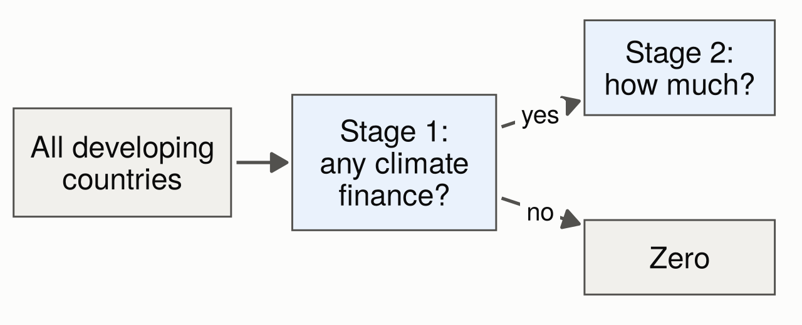
Findings (from the abstract):
Remember restricted range: study only recipients and you miss stage 1.
Whole class, 5 minutes. What else affects how much climate finance a country receives? I’ll draw it as you call it out.
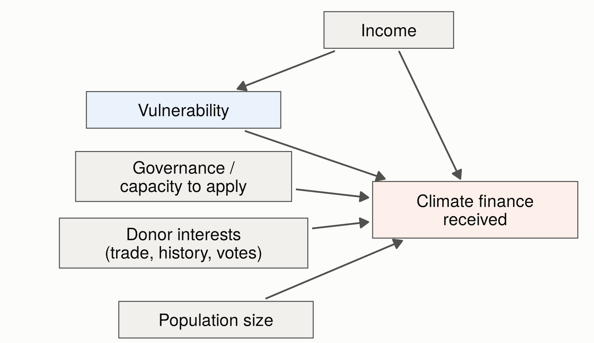
Starting point. We add arrows together.
In your group, 4 minutes. Then a few groups report back (2–3 minutes).
| Measure | Map | Model | |
|---|---|---|---|
| Paper | Fransen et al. | Xie et al. | Tennant et al. |
| Kind of claim | There is a gap, and here is its size | Here is who is where | These factors predict who gets what |
| Main risk | Validity of proxies | Who is missing | Confounding; meaning of inference |
| Lecture idea | Concept → number | Variation and selection | Correlation ≠ causation; uncertainty |
Your data paper will probably sit in Measure and Map, perhaps with a careful step toward Model. That is exactly the right scope.
From topic to a question your data can answer
Every question type needs something that differs. Find yours before you pick a question.
| Question type | The variation you need |
|---|---|
| Change | The same measure in several years |
| Distribution | Many units that receive or have different amounts |
| Comparison | At least two groups (or periods), with several cases in each |
| Composition | A total that splits into parts, and parts that differ in size |
| Relationship | Variation in both the outcome (Y) and the predictor (X) |
| Your primary focus | Typical unit (one row) | Variation often comes from… |
|---|---|---|
| Actor (China, AOSIS, a firm) | Actor-year, or the actor vs. peers | Over time; comparison with similar actors |
| IO / institution (GCF, World Bank) | Project or recipient | Across projects, recipients, sectors, years |
| Issue (adaptation, deforestation) | Country or country-year | Across countries and over time |
| Instrument / policy (NDCs, carbon pricing) | Country or country-year | Adopters vs. non-adopters; before vs. after |
One actor = no variation across cases. Get it from time, a comparison group, or the parts of a total.
| Rung | Example |
|---|---|
| Topic | Climate finance for small islands |
| Concept | Access to adaptation finance |
| Measure | Adaptation-related development finance per capita (OECD), 2015–2022 |
| Pattern | Does it vary across SIDS by income level? |
| Question | Did lower-income SIDS receive less adaptation finance per capita than higher-income SIDS, 2015–2022? |
Individually, 5 minutes: write your own five rungs.
In your group, 4 minutes: swap. Your partners check:
A few volunteers share (2 min).
Bring your question ladder. We’ll work with real data:
summary statistics → one good figure → one statistical test
Break 2:30–2:45 · Lab starts at 2:45. Open RStudio during the break and come find me if anything isn’t working.
POLS 081 · SSQL Workshop · Part 1